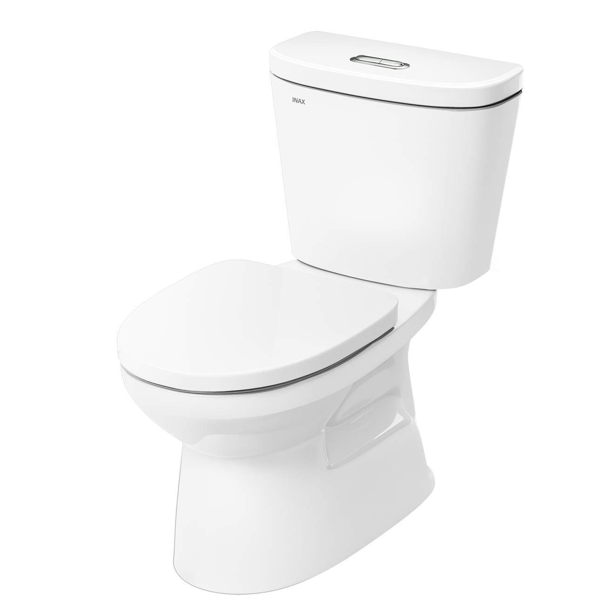
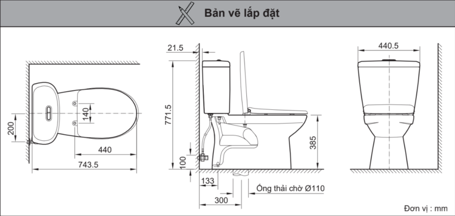

Bồn cầu INAX C-306VAN sở hữu kiểu dáng 2 khối với kích thước tổng thể 740 x 440 x 770 (mm), được thiết kế thông minh nhằm tối giản những góc cạnh, giúp tối ưu không gian phòng tắm và dễ dàng vệ sinh. Với tông màu trắng trang nhã kết hợp cùng chiều cao thân bệt được tăng thêm 15mm, sản phẩm không chỉ đảm bảo tính thẩm mỹ hiện đại mà còn tạo cảm giác thoải mái tối đa cho người sử dụng.Đặc điểm nổi bật của bồn cầu 2 khối C-306VANNắp đóng êm ái CF-57VSAK, giúp loại bỏ tiếng ồn khó chịu khi đóng nắp, mang lại không gian yên tĩnh và tăng độ bền cho sản phẩm.Công nghệ xả xoáy Vortex mới, tạo lực xoáy mạnh mẽ giúp xả rửa tối ưu và cuốn trôi mọi vết bẩn cứng đầu một cách nhanh chóng.Hệ thống xả thẳng kết hợp kiểu xả xi-phông dạng nhấn, đảm bảo hiệu suất xả vượt trội nhưng vẫn vận hành êm ái.Hệ thống xả kép tiết kiệm nước với hai mức nhấn linh hoạt: 4.8L cho xả đại và 3.0L cho xả tiểu, giúp tiết kiệm tài nguyên và thân thiện với môi trường.Khả năng kết hợp linh hoạt, nắp bồn cầu có thể thay thế bằng các loại nắp rửa cơ hoặc nắp điện tử INAX để nâng cấp trải nghiệm tiện nghi.Để tạo nên không gian phòng tắm đồng bộ và đẳng cấp theo công nghệ Nhật Bản, khách hàng có thể kết hợp bồn cầu 2 khối INAX C-306VAN với các mẫu chậu rửa lavabo cùng thương hiệu.Video giới thiệu công nghệ Aqua Ceramic độc quyền của INAXBản vẽ bồn cầu 2 khối C-306VANFile lắp đặt C-306VANThông số kỹ thuậtChất liệuSứ cao cấpKiểu dáng2 khốiKích thước740 x 440 x 770 (mm) (Dài x Rộng x Cao)Thương hiệuINAXThiết kế- Thân bệt cao thêm 15mm tạo tư thế ngồi thoải mái, dễ chịu hơn - Nắp đóng êm CF-57VSAK hạn chế tiếng ồn và tăng độ bền - Thiết kế tối giản, ít góc cạnh giúp việc vệ sinh trở nên đơn giảnTính năng- Hai mức xả siêu tiết kiệm nước: 4.8L (đại) / 3.0L (tiểu) - Công nghệ xả xoáy Vortex mạnh mẽ, cuốn trôi mọi chất bẩn chỉ trong một lần nhấnMàu sắcTrắngKhác- Bao gồm đế thải nước PT-B102 (không bao gồm van khóa nước) - Hotline tư vấn và bảo hành: 18006633
Bồn cầu 2 khối C-306VAN
Bàn cầu thương hiệu INAX.
Đã cập nhật danh sách yêu thích.
DANH MỤC: Bàn cầu
MÃ SẢN PHẨM: C-306VAN
DEPTH: 744mm
HEIGHT: 772mm
WIDTH: 440mm
Bồn cầu INAX C-306VAN sở hữu kiểu dáng 2 khối với kích thước tổng thể 740 x 440 x 770 (mm), được thiết kế thông minh nhằm tối giản những góc cạnh, giúp tối ưu không gian phòng tắm và dễ dàng vệ sinh. Với tông màu trắng trang nhã kết hợp cùng chiều cao thân bệt được tăng thêm 15mm, sản phẩm không chỉ đảm bảo tính thẩm mỹ hiện đại mà còn tạo cảm giác thoải mái tối đa cho người sử dụng.Đặc điểm nổi bật của bồn cầu 2 khối C-306VANNắp đóng êm ái CF-57VSAK, giúp loại bỏ tiếng ồn khó chịu khi đóng nắp, mang lại không gian yên tĩnh và tăng độ bền cho sản phẩm.Công nghệ xả xoáy Vortex mới, tạo lực xoáy mạnh mẽ giúp xả rửa tối ưu và cuốn trôi mọi vết bẩn cứng đầu một cách nhanh chóng.Hệ thống xả thẳng kết hợp kiểu xả xi-phông dạng nhấn, đảm bảo hiệu suất xả vượt trội nhưng vẫn vận hành êm ái.Hệ thống xả kép tiết kiệm nước với hai mức nhấn linh hoạt: 4.8L cho xả đại và 3.0L cho xả tiểu, giúp tiết kiệm tài nguyên và thân thiện với môi trường.Khả năng kết hợp linh hoạt, nắp bồn cầu có thể thay thế bằng các loại nắp rửa cơ hoặc nắp điện tử INAX để nâng cấp trải nghiệm tiện nghi.Để tạo nên không gian phòng tắm đồng bộ và đẳng cấp theo công nghệ Nhật Bản, khách hàng có thể kết hợp bồn cầu 2 khối INAX C-306VAN với các mẫu chậu rửa lavabo cùng thương hiệu.Video giới thiệu công nghệ Aqua Ceramic độc quyền của INAXBản vẽ bồn cầu 2 khối C-306VANFile lắp đặt C-306VANThông số kỹ thuậtChất liệuSứ cao cấpKiểu dáng2 khốiKích thước740 x 440 x 770 (mm) (Dài x Rộng x Cao)Thương hiệuINAXThiết kế- Thân bệt cao thêm 15mm tạo tư thế ngồi thoải mái, dễ chịu hơn - Nắp đóng êm CF-57VSAK hạn chế tiếng ồn và tăng độ bền - Thiết kế tối giản, ít góc cạnh giúp việc vệ sinh trở nên đơn giảnTính năng- Hai mức xả siêu tiết kiệm nước: 4.8L (đại) / 3.0L (tiểu) - Công nghệ xả xoáy Vortex mạnh mẽ, cuốn trôi mọi chất bẩn chỉ trong một lần nhấnMàu sắcTrắngKhác- Bao gồm đế thải nước PT-B102 (không bao gồm van khóa nước) - Hotline tư vấn và bảo hành: 18006633
DANH MỤC: Bàn cầu
MÃ SẢN PHẨM: C-306VAN
DEPTH: 744mm
HEIGHT: 772mm
WIDTH: 440mm